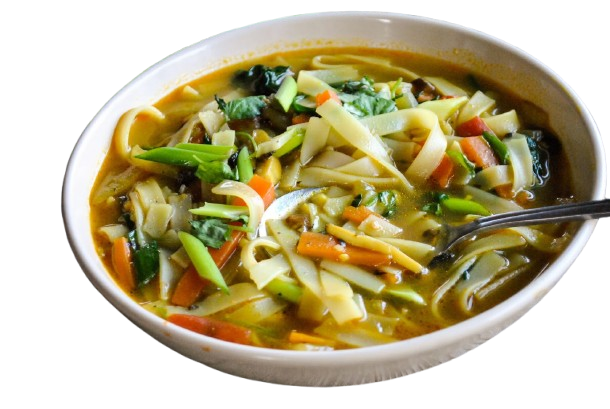

Back

Vegan Thukpa
A comforting Himalayan noodle soup filled with vegetables and spices.
Ingredients
200g rice noodles
1 tablespoon vegetable oil
1 onion, thinly sliced
2 cloves garlic, minced
1 inch ginger, grated
1 carrot, julienned
1 bell pepper, sliced
1 cup mushrooms, sliced
1 cup spinach leaves
1 teaspoon soy sauce
1 teaspoon chili paste (adjust to taste)
4 cups vegetable broth
Fresh cilantro, for garnish
Lime wedges, for serving
Instructions
Cook the rice noodles according to package instructions, then drain and set aside
In a large pot, heat the oil over medium heat. Sauté the onion, garlic, and ginger until fragrant.
Add the carrots, bell pepper, and mushrooms. Stir-fry for 3-4 minutes.
Pour in the vegetable broth, soy sauce, and chili paste. Bring to a boil, then reduce heat and simmer for 10 minutes.
Add the spinach and cooked noodles. Stir until the spinach wilts.
Serve hot, garnished with fresh cilantro and a squeeze of lime juice.